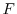
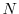

MODELLER minimizes the objective function  with respect to Cartesian coordinates of atoms (3D points) that form a system (one or more molecules):
MODELLER allows some atoms to be fixed during optimization; i.e., only selected atoms are allowed to be moved. Similarly, MODELLER also allows only a subset of all restraints to be actually used in the calculation of the objective function. Each subset is indicated by a list of indices specifying the selected atoms or restraints.
There are two kinds of restraints, static and dynamic, that both contribute to the objective function as indicated in Eq. A.5:
| (A.6) |
The dynamic restraints are obtained from a dynamic pairs list (the non-bonded pairs list). Each dynamic pair corresponds to at least one restraint, which may or may not be violated. The dynamic pairs list includes only the pairs of atoms that satisfy the following three conditions: (1) One or both atoms in a pair are allowed to move. (2) The two atoms are not connected through one, two, or three chemical bonds. (3) The two atoms are closer than a preset cutoff distance (e.g., 4 Å). There are on the order of 5000 atom pairs in the dynamic pairs list when only soft-sphere overlap restraints are used. Currently, the restraint types on the dynamic atom pairs that can be selected include the soft-sphere overlap, Lennard-Jones, Coulomb interactions, and MODELLER non-bonded spline restraints.
The existence of the dynamic pairs list is justified by the fact that dynamic pairs are usually a small fraction of all possible atom-atom pairs ( , where  is the number of atoms in a system). The use of the dynamic pairs list becomes especially beneficent as the size of the system increases.
The actual algorithm for creating the dynamic pairs list varies with the size of the system, whether or not all atoms are allowed to move, or whether or not the user wants to include the fixed environment in the calculation of non-bonded restraints involving the selected atoms. See Section 6.11 for more information.
The hash-function algorithm is used to determine whether or not two atoms are a dynamic atom pair. This algorithm is about 20 times slower than a lookup table but it requires much less memory and still spends a negligible fraction of the total CPU time. A hash-function table is prepared only once before the start of the optimization and any other operation involving an evaluation of the objective function (e.g., selection.energy(), selection.hot_atoms(), Section 6.11).
The dynamic pairs list is not necessarily re-generated each time the objective function is evaluated, although the contribution of the restraint to the objective function is calculated in each call to the objective function routine with the current values of the Cartesian coordinates. The dynamic pairs list is re-generated only when maximal atomic shifts accumulate to a value larger than a preset cutoff. This cutoff is chosen such that there cannot be a violation of a restraint without having its atom pair on the dynamic pairs list. The dynamic pairs list is recalculated in and of the objective function calls at the beginning and the end of optimization, respectively.
Each evaluation of the objective function or of its first derivatives with respect to the Cartesian coordinates involves the following steps: